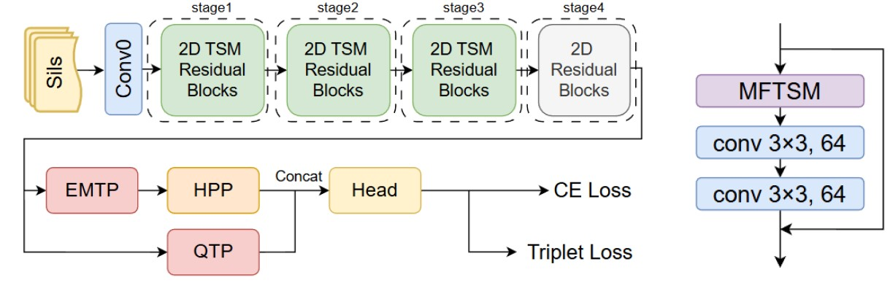
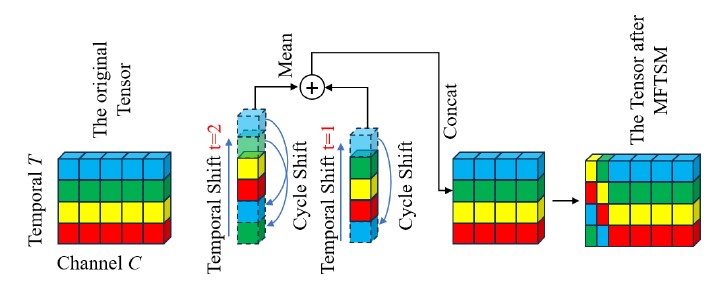
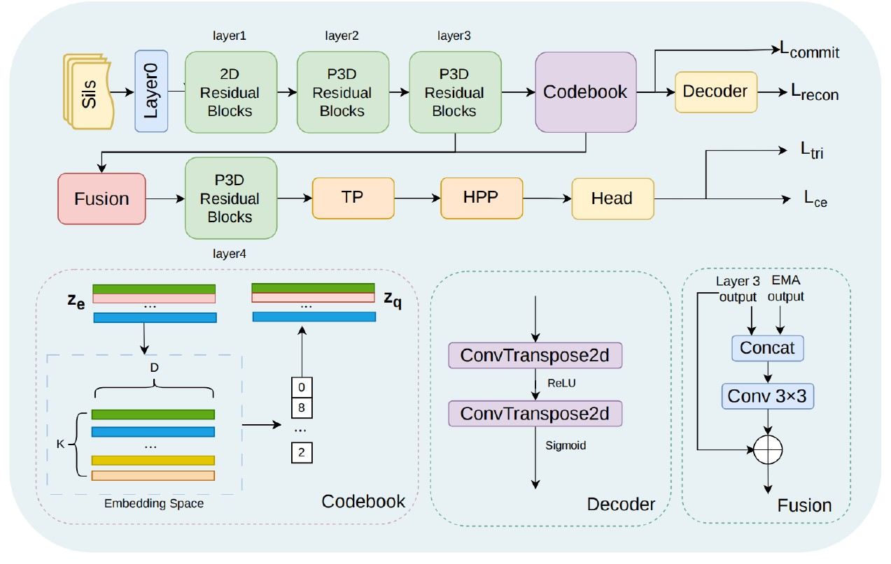

Gait Recognition
Learning identity-preserving motion representations across viewpoints, walking conditions, and aerial perspectives.
Spatial-temporal learning3D point cloudsResearch Assistant Professor
I develop learning methods for visual understanding and biometric identification, with a focus on gait recognition, human motion analysis, and foundation-model adaptation.
I am a Research Assistant Professor at the School of Computing and Artificial Intelligence, Fuyao University of Science and Technology. I received my Ph.D. in Electronic and Information Engineering from The Hong Kong Polytechnic University and previously worked as a Postdoctoral Research Fellow at the School of Automation Science and Engineering, South China University of Technology.
My research interests span computer vision, pattern recognition, deep learning, and biometric identification, with particular emphasis on face recognition, gait recognition, and human motion modeling. I am interested in building robust and generalizable recognition systems for challenging real-world conditions, including cross-view, occlusion, and aerial scenarios.
My current research also explores how pretrained vision and 3D foundation models can be adapted to specialized biometric tasks.
Explore my publications, research code, and professional background.
My work combines representation learning, spatial-temporal modeling, and biometric cues to improve recognition when visual information is incomplete or conditions change.
Learning identity-preserving motion representations across viewpoints, walking conditions, and aerial perspectives.
Spatial-temporal learning3D point cloudsDeveloping recognition methods that remain effective under facial occlusion and incomplete visual evidence.
Masked face recognitionAttentionAdapting pretrained vision and 3D representations to biometric tasks while retaining transferable knowledge.
Vision modelsEfficient adaptationModeling relational and multi-scale cues to capture complementary structures in visual data.
Graph learningFeature modelingAccepted for publication in Machine Intelligence Research. (In Press).
Pattern Analysis and Applications.
Read article ↗ · View code ↗Authors: Kun Liu, Haojun Xie, Wenxiong Kang, Weijie Sun, and Muhammad Saad Shakeel*
Accepted in IEEE Transactions on Biometrics, Behavior, and Identity Science (TBIOM).
Read paper ↗

Authors: Kun Liu, JiaJun Wu, Muhammad Saad Shakeel*, Haojun Xie, Weijie Sun, and Wenxiong Kang
Accepted in IEEE International Joint Conference on Biometrics (IJCB) 2026.

A selection of my work in gait recognition and face biometrics. Visit my Google Scholar profile for the full publication list.
Find additional journal and conference papers, citation information, and related research outputs on Google Scholar.

This project investigates human gait identification from aerial viewpoints by exploring structural and motion information in 3D point clouds and RGB video using deep learning. The research targets the challenges of unusual viewpoints, limited visual detail, and robust identity representation.
Gait biometricsAerial visionRGB + 3DI value reproducible research and the sharing of useful implementations. Explore my public repositories for available code and project resources.
I welcome conversations with researchers, academic groups, and students interested in advancing computer vision and biometric identification. I am especially interested in collaborative work that connects complementary expertise and leads to meaningful, reproducible research.
For research discussions, collaboration opportunities, or questions about my work, please feel free to reach out.
✉ Email ⌘ GitHub 🎓 Google Scholar